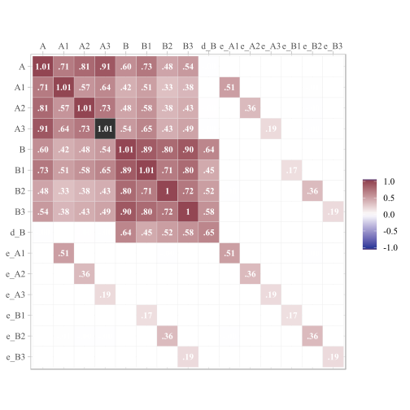
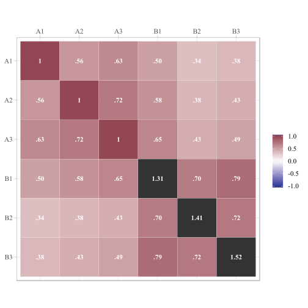
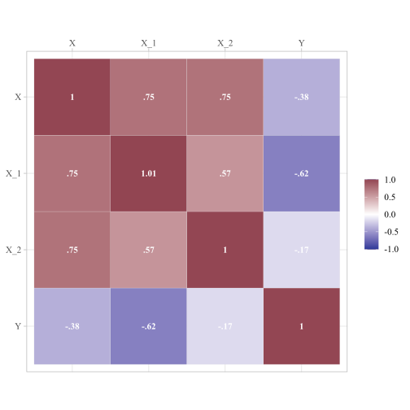
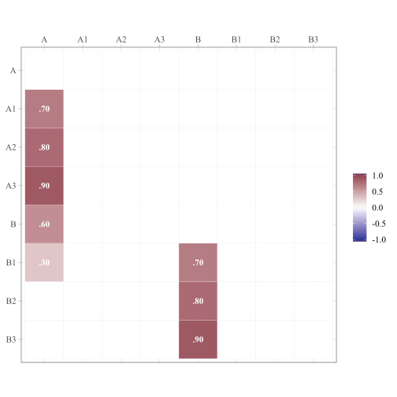
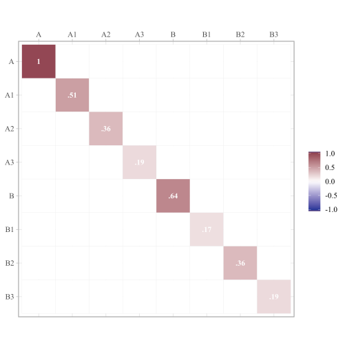
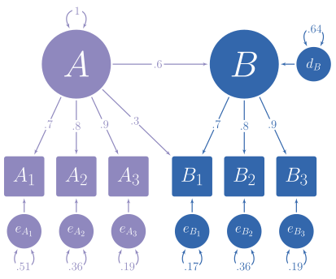
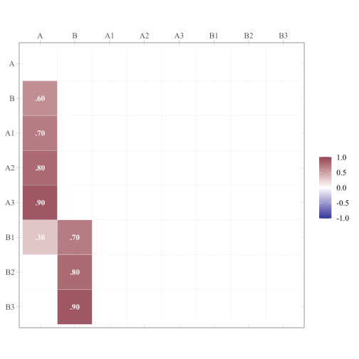

Using the simstandard package
W. Joel Schneider
2020-10-21
Source:vignettes/simstandard_tutorial.Rmd
simstandard_tutorial.Rmd
Purpose of simstandard
In the figure below, you can see a hypothetical structural model with its standardized loadings and path coefficients.

Suppose you need to simulate multivariate normal data based on this model, but you do not know the error variances and the latent disturbance variances needed to make your model produce standardized data. It is often difficult to find such values algebraically, and instead they must be found iteratively.
The simstandard package finds the standardized variances and creates standardized multivariate normal data using lavaan syntax. It can also create latent variable scores, error terms, disturbance terms, estimated factor scores, and equally weighted composite scores for each latent variable.
Generate Model-Based Multivariate Data
library(simstandard) library(lavaan) library(knitr) library(dplyr) library(ggplot2) library(tibble) library(tidyr) # lavaan syntax for model m <- " A =~ 0.7 * A1 + 0.8 * A2 + 0.9 * A3 + 0.3 * B1 B =~ 0.7 * B1 + 0.8 * B2 + 0.9 * B3 B ~ 0.6 * A " # Simulate data d <- sim_standardized(m, n = 100000) # Display First 6 rows head(d) #> # A tibble: 6 x 15 #> A1 A2 A3 B1 B2 B3 A B e_A1 e_A2 #> <dbl> <dbl> <dbl> <dbl> <dbl> <dbl> <dbl> <dbl> <dbl> <dbl> #> 1 1.51 0.884 1.03 2.38 3.58 2.87 1.31 2.79 0.595 -0.166 #> 2 1.57 0.587 0.514 0.334 0.509 1.12 1.05 0.678 0.834 -0.256 #> 3 -0.498 0.589 0.762 0.363 -0.313 0.705 0.0385 0.175 -0.525 0.558 #> 4 -0.269 -0.941 -0.763 -0.288 0.217 -0.683 -0.856 -0.458 0.330 -0.256 #> 5 -0.0163 -0.814 0.447 -0.226 0.723 0.203 1.04 -0.266 -0.747 -1.65 #> 6 -1.44 -0.192 -0.795 -1.13 -0.441 -0.822 -0.966 -0.671 -0.765 0.581 #> # ... with 5 more variables: e_A3 <dbl>, e_B1 <dbl>, e_B2 <dbl>, e_B3 <dbl>, #> # d_B <dbl>
Let’s make a function to display correlations and covariance matrices:
ggcor <- function(d) { require(ggplot2) as.data.frame(d) %>% tibble::rownames_to_column("rowname") %>% tidyr::gather(colname, r, -rowname) %>% dplyr::mutate(rowname = forcats::fct_rev(rowname)) %>% dplyr::mutate(colname = factor(colname, levels = rev(levels(rowname)))) %>% ggplot(aes(colname, rowname, fill = r)) + geom_tile(color = "gray90") + geom_text(aes(label = formatC(r, digits = 2, format = "f") %>% stringr::str_replace_all("0\\.",".") %>% stringr::str_replace_all("1.00","1")), color = "white", fontface = "bold", family = "serif") + scale_fill_gradient2(NULL, na.value = "gray20", limits = c(-1.01, 1.01), high = "#924552", low = "#293999") + coord_equal() + scale_x_discrete(NULL,position = "top") + scale_y_discrete(NULL) + theme_light(base_family = "serif", base_size = 14) }
Because the data are standardized, the covariance matrix of the observed and latent variables should be nearly identical to a correlation matrix. The error and disturbance terms are not standardized.
cov(d) %>% ggcor

To return only the observed variables
d <- sim_standardized(m, n = 100000, latent = FALSE, errors = FALSE) # Display First 6 rows head(d) #> # A tibble: 6 x 6 #> A1 A2 A3 B1 B2 B3 #> <dbl> <dbl> <dbl> <dbl> <dbl> <dbl> #> 1 1.61 1.15 2.06 0.903 -0.0472 -0.0756 #> 2 1.46 1.50 0.684 0.125 -0.483 0.339 #> 3 -0.891 -1.19 -1.22 -0.517 0.396 -0.725 #> 4 0.133 -1.55 -0.787 -1.00 -0.171 -1.18 #> 5 -0.929 -1.64 -0.964 -1.23 -1.51 -1.01 #> 6 -0.434 -0.242 -0.0973 -0.869 -0.781 -1.21
Comparison with lavaan::simulateData
I love the lavaan package. However, one aspect of one function in lavaan is not quite right yet. lavaan’s simulateData function is known to generate non-standardized data, even when the standardized parameter is set to TRUE. See how it creates variable Y with a variance higher than 1.
test_model <- " Y ~ -.75 * X_1 + .25 * X_2 X =~ .75 * X_1 + .75 * X_2 " library(lavaan) d_lavaan <- simulateData( model = test_model, sample.nobs = 100000, standardized = TRUE) cov(d_lavaan) %>% ggcor

With the same test model, simstandard will calculate variables with variances of 1.
sim_standardized(test_model, n = 100000, errors = FALSE) %>% cov %>% ggcor()

Inspecting model matrices
You can inspect the matrices that simstandard uses to create the data by calling simstandardized_matrices.
matrices <- sim_standardized_matrices(m)
The A matrix contains all the asymmetric path coefficients (i.e., the loadings and the structural coefficients). These coefficients are specified in the lavaan model syntax.
matrices$RAM_matrices$A %>% ggcor()

The S matrix contains all the symmetric path coefficients (i.e., the variances and correlations of the observed and latent variables). For endogenous variables, the variances and correlations refer to the variance and correlations of the variable’s associated error or disturbance term. In this case, A is the only endogenous variable, and thus its variance on the diagonal of the S matrix is 1.
matrices$RAM_matrices$S %>% ggcor()

Thus, we can use these results to insert the missing values from the path diagram at the beginning of this tutorial

Estimated Factor Scores
If you want to estimate factor scores using the regression method (i.e., Thurstone’s method), set factor_scores to TRUE. All scores ending in FS are factor score estimates.
m <- " A =~ 0.9 * A1 + 0.8 * A2 + 0.7 * A3 " sim_standardized( m, n = 100000, factor_scores = TRUE ) %>% head() #> # A tibble: 6 x 11 #> A1 A2 A3 A e_A1 e_A2 e_A3 A_FS e_A1_FS e_A2_FS #> <dbl> <dbl> <dbl> <dbl> <dbl> <dbl> <dbl> <dbl> <dbl> <dbl> #> 1 -0.186 -0.189 -0.291 0.0356 -0.218 -0.218 -0.316 -0.212 0.0122 -0.0320 #> 2 -1.75 -0.500 -0.411 -1.50 -0.398 0.701 0.639 -1.24 -1.44 0.826 #> 3 -0.957 -0.851 -2.47 -1.10 0.0331 0.0293 -1.70 -1.23 0.337 0.217 #> 4 0.836 1.37 -0.980 1.30 -0.337 0.322 -1.89 0.706 0.461 1.33 #> 5 -0.780 -0.411 -1.96 -1.31 0.397 0.634 -1.05 -0.912 0.0947 0.531 #> 6 1.03 -0.243 0.505 0.465 0.613 -0.615 0.179 0.630 1.07 -1.24 #> # ... with 1 more variable: e_A3_FS <dbl>
Adding factor scores to new data
Suppose you have some new data and wish to add estimated factor scores to it. The add_factor_scores function will take your data and return your data with the estimated factors added to it.
d <- tibble::tribble( ~A1, ~A2, ~A3, 2L, 2.5, 1.3, -1L, -1.5, -2.1 ) add_factor_scores(d, m ) #> A1 A2 A3 A #> 1 2 2.5 1.3 2.1 #> 2 -1 -1.5 -2.1 -1.4
Composite Scores
If you want to calculate equally-weighted composite scores based on the indicators of each latent variable, set `composites = TRUE’.
m <- " A =~ 0.9 * A1 + 0.8 * A2 + 0.7 * A3 " sim_standardized( m, n = 100000, composites = TRUE ) %>% head() #> # A tibble: 6 x 8 #> A1 A2 A3 A e_A1 e_A2 e_A3 A_Composite #> <dbl> <dbl> <dbl> <dbl> <dbl> <dbl> <dbl> <dbl> #> 1 0.138 -0.699 -0.234 -0.446 0.539 -0.342 0.0781 -0.304 #> 2 -0.600 -0.794 0.121 -0.472 -0.176 -0.416 0.452 -0.487 #> 3 -0.339 0.611 0.240 0.150 -0.474 0.491 0.135 0.196 #> 4 1.56 1.38 1.39 1.27 0.417 0.367 0.502 1.66 #> 5 -1.51 -0.985 0.420 -1.46 -0.199 0.182 1.44 -0.795 #> 6 0.527 1.07 2.20 0.416 0.152 0.736 1.91 1.45
Composite scores with equal weights can also be added to new data:
add_composite_scores(d, m ) #> A1 A2 A3 A_Composite #> 1 2 2.5 1.3 2.2 #> 2 -1 -1.5 -2.1 -1.8
Return lavaan syntax with all parameters set free
Suppose that we want to verify that the data generated by the sim_standardized function is correct. We will need an analogous model, but with all the fixed parameters set free. We could manually remove the fixed parameter values, but with large models the process is tedious and introduces a risk of error. The fixed2free function painlessly removes the fixed parameters values from the model.
# lavaan syntax for model m <- " A =~ 0.7 * A1 + 0.8 * A2 + 0.9 * A3 + 0.3 * B1 B =~ 0.7 * B1 + 0.8 * B2 + 0.9 * B3 B ~ 0.6 * A " # Make model m free m_free <- fixed2free(m) # Display model m_free cat(m_free) #> A =~ A1 + A2 + A3 + B1 #> B =~ B1 + B2 + B3 #> B ~ A
Now let’s use lavaan to see if the observed data in d conform to the model in m_free.
# Set the random number generator for reproducible results set.seed(12) # Generate data based on model m d <- sim_standardized( m, n = 100000, latent = FALSE, errors = FALSE) # Evaluate the fit of model m_free on data d library(lavaan) lav_results <- sem( model = m_free, data = d) # Display summary of model summary( lav_results, standardized = TRUE, fit.measures = TRUE) #> lavaan 0.6-7 ended normally after 27 iterations #> #> Estimator ML #> Optimization method NLMINB #> Number of free parameters 14 #> #> Number of observations 100000 #> #> Model Test User Model: #> #> Test statistic 7.493 #> Degrees of freedom 7 #> P-value (Chi-square) 0.379 #> #> Model Test Baseline Model: #> #> Test statistic 371352.125 #> Degrees of freedom 15 #> P-value 0.000 #> #> User Model versus Baseline Model: #> #> Comparative Fit Index (CFI) 1.000 #> Tucker-Lewis Index (TLI) 1.000 #> #> Loglikelihood and Information Criteria: #> #> Loglikelihood user model (H0) -666610.982 #> Loglikelihood unrestricted model (H1) -666607.236 #> #> Akaike (AIC) 1333249.965 #> Bayesian (BIC) 1333383.146 #> Sample-size adjusted Bayesian (BIC) 1333338.653 #> #> Root Mean Square Error of Approximation: #> #> RMSEA 0.001 #> 90 Percent confidence interval - lower 0.000 #> 90 Percent confidence interval - upper 0.004 #> P-value RMSEA <= 0.05 1.000 #> #> Standardized Root Mean Square Residual: #> #> SRMR 0.001 #> #> Parameter Estimates: #> #> Standard errors Standard #> Information Expected #> Information saturated (h1) model Structured #> #> Latent Variables: #> Estimate Std.Err z-value P(>|z|) Std.lv Std.all #> A =~ #> A1 1.000 0.703 0.703 #> A2 1.142 0.005 231.116 0.000 0.803 0.800 #> A3 1.284 0.005 247.676 0.000 0.903 0.901 #> B1 0.427 0.004 114.547 0.000 0.300 0.300 #> B =~ #> B1 1.000 0.701 0.700 #> B2 1.139 0.005 238.139 0.000 0.798 0.798 #> B3 1.288 0.005 247.366 0.000 0.902 0.901 #> #> Regressions: #> Estimate Std.Err z-value P(>|z|) Std.lv Std.all #> B ~ #> A 0.597 0.004 141.196 0.000 0.599 0.599 #> #> Variances: #> Estimate Std.Err z-value P(>|z|) Std.lv Std.all #> .A1 0.507 0.003 194.579 0.000 0.507 0.506 #> .A2 0.362 0.002 165.904 0.000 0.362 0.359 #> .A3 0.188 0.002 97.276 0.000 0.188 0.188 #> .B1 0.170 0.001 130.982 0.000 0.170 0.169 #> .B2 0.362 0.002 178.775 0.000 0.362 0.362 #> .B3 0.189 0.002 106.863 0.000 0.189 0.189 #> A 0.495 0.004 121.519 0.000 1.000 1.000 #> .B 0.315 0.003 124.248 0.000 0.641 0.641 # Extract RAM paths RAM <- lav2ram(lav_results) # Display asymmetric paths (i.e., single-headed arrows for # loadings and structure coefficients) RAM$A %>% ggcor()

# Display symmetric paths (i.e., curved double-headed arrows # exogenous variances, error variances, disturbance variances, # and any covariances among these) RAM$S %>% ggcor()
As can be seen, all the fit measures indicate a near-perfect fit, and the parameter estimates are within rounding error of the fixed parameters in model m.
Return lavaan syntax for a model with standardized variances specified
Although the simstandardized function will generate data for you, you might want to use a function from a different package instead, such as lavaan::simulateData or simsem::sim. In this case, you can use the model_complete function to output the lavaan syntax for a standardized model with all standardized variances specified.
# Specify model m <- " A =~ 0.7 * A1 + 0.8 * A2 + 0.9 * A3 + 0.3 * B1 B =~ 0.7 * B1 + 0.8 * B2 + 0.9 * B3 B ~ 0.6 * A " m_complete <- model_complete(m) # Display complete model cat(m_complete) #> #> A =~ 0.7 * A1 + 0.8 * A2 + 0.9 * A3 + 0.3 * B1 #> B =~ 0.7 * B1 + 0.8 * B2 + 0.9 * B3 #> B ~ 0.6 * A #> #> # Variances #> A1 ~~ 0.51 * A1 #> A2 ~~ 0.36 * A2 #> A3 ~~ 0.19 * A3 #> B1 ~~ 0.168 * B1 #> B2 ~~ 0.36 * B2 #> B3 ~~ 0.19 * B3 #> A ~~ 1 * A #> B ~~ 0.64 * B
Return lavaan syntax from matrices
Suppose that a research article provides model coefficients in a table. We could spend time creating lavaan syntax by hand, but such work can be tedious. The matrix2lavaan function can help save time when the models are already specified in matrix form.
The measurement model
The measurement model can be specified with a matrix in which the column names are latent variables and the row names are indicator variables.
Here we have three latent variables, Vocabulary, Working Memory Capacity, and Reading, each defined by three indicator variables.
m_meas <- matrix(c( 0.8,0,0, # VC1 0.9,0,0, # VC2 0.7,0,0, # VC3 0,0.6,0, # WM1 0,0.7,0, # WM2 0,0.8,0, # WM3 0,0,0.9, # RD1 0,0,0.7, # RD2 0,0,0.8), # RD3 nrow = 9, byrow = TRUE, dimnames = list( c("VC1", "VC2", "VC3", "WM1", "WM2", "WM3", "RD1", "RD2", "RD3"), c("Vocabulary", "WorkingMemory", "Reading")))
The structural model
The structural model can be specified with a matrix in which the predictors are the column names and the criterion variables are the row names.
Here we have Vocabulary and Working Memory Capacity predicting Reading Scores.
m_struct <- matrix( c(0.4,0.3), ncol = 2, dimnames = list( "Reading", c("Vocabulary", "WorkingMemory")))
This could have been a 3 by 3 matrix with zeroes (which are ignored).
Covariances
The variances and covariances must be specified as a symmetric matrix, though variables can be omitted.
Here we specify that the latent variables Vocabulary and Working Memory Capacity are correlated.
Using the matrix2lavaan function
The matrix2lavaan function takes arguments for the measurement model, structural model, and covariances. Any of the three matrices can be omitted.
model <- matrix2lavaan(measurement_model = m_meas, structural_model = m_struct, covariances = m_cov) cat(model) #> Vocabulary =~ 0.8 * VC1 + 0.9 * VC2 + 0.7 * VC3 #> WorkingMemory =~ 0.6 * WM1 + 0.7 * WM2 + 0.8 * WM3 #> Reading =~ 0.9 * RD1 + 0.7 * RD2 + 0.8 * RD3 #> Reading ~ 0.4 * Vocabulary + 0.3 * WorkingMemory #> Vocabulary ~~ 0.5 * WorkingMemory
Specifying models with data.frames instead of matrices
As an alternative, the matrix2lavaan function can take data.frames (or tibbles) with either rownames or the first column as a character vector.
# A tibble with indicator variables listed in the first column m_meas <- tibble::tribble( ~Test, ~Vocabulary, ~WorkingMemory, ~Reading, "VC1", 0.8, 0, 0, "VC2", 0.9, 0, 0, "VC3", 0.7, 0, 0, "WM1", 0, 0.6, 0, "WM2", 0, 0.7, 0, "WM3", 0, 0.8, 0, "RD1", 0, 0, 0.9, "RD2", 0, 0, 0.7, "RD3", 0, 0, 0.8) # A data.frame with criterion variable specified as a row name m_struct <- data.frame(Vocabulary = 0.4, WorkingMemory = 0.3, row.names = "Reading") # A data.frame with variable names specified as row names m_cov <- data.frame(Vocabulary = c(1, 0.5), WorkingMemory = c(0.5, 1)) rownames(m_cov) <- c("Vocabulary", "WorkingMemory") model <- matrix2lavaan(measurement_model = m_meas, structural_model = m_struct, covariances = m_cov)